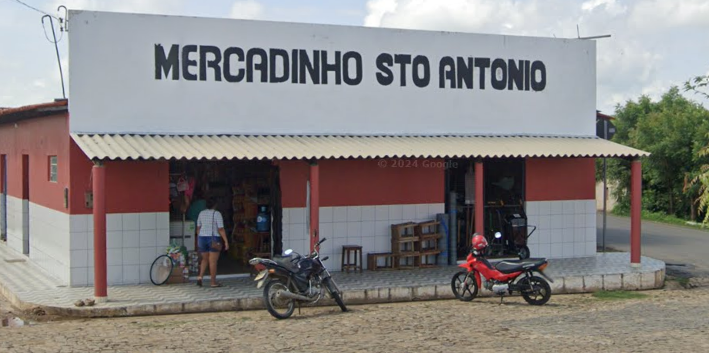

Quem somos nós
Antônio Pereira da Silva criou esse mercado há 52 anos, ao longo do tempo mudando de local, mas sempre mantendo a qualidade em nosso antendimento.
Somos um mercado pequeno, mas nos importamos com nossos clientes, dessa forma sempre mantendo o respeito.
Endereço
Ver no Google MapsDestaques
Açougue
Carnes de primeira sempre em dia.
Cesta Básica
Produtos alimentícios em geral para seu consumo no dia a dia.
Materiais Escolares
Produtos feitos para uso em escolas e universidades.
Bebidas Alcoólicas
Diversidade em produtos alcoólicos, como cervejas, uísque, vodka, vinho e outros.
Horário de Funcionamento
- Segunda a Sábado: 06h às 18h
- Domingo: 06h às 11h